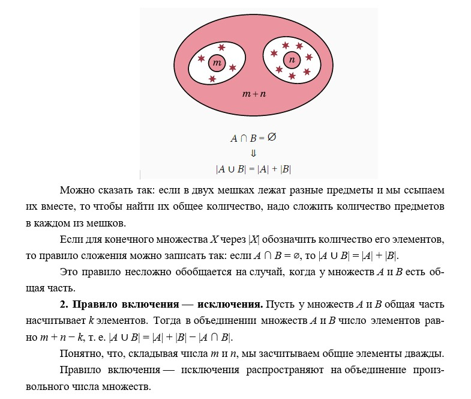
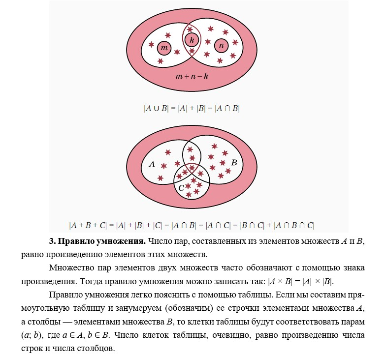
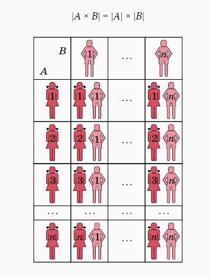
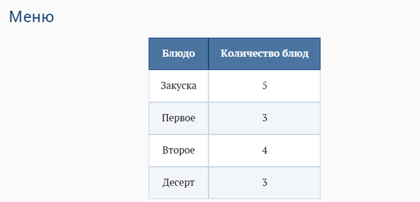
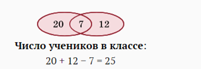
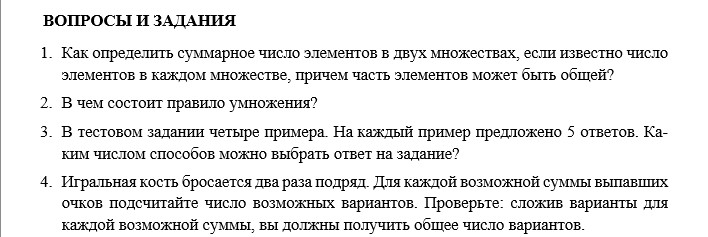

Основные правила комбинаторных подсчетов
1. Правило сложения. Пусть в множестве A имеется m элементов, а в множестве B — n элементов. Если у множеств A и B нет общих элементов, то в их объединении число элементов равно m + n



Как применяются правила комбинаторики при решении задач?
1 Число слогаемых
Рассмотрим произведение (a + b + c)(a 2 + b 2 + c 2 − ab − ac − bc)
Сколько одночленов (до приведения подобных) получится при умножении «скобки на скобку»?
Этот же вопрос можно переформулировать так: «Сколько пар можно составить из одночленов в первой и второй скобках?» Выберем любой из трех одночленов в первой скобке и любой из шести — во второй. Число пар равно 3 · 6 = 18 — использовали правило умножения.
2. Меню. В меню указаны 5 закусок, 3 первых блюда, 4 вторых и 3 десерта. Каким числом способов можно заказать обед из четырех блюд?
При продумывании заказа составляем четверки названий:
1) закуска;
2) первое блюдо;
3) второе блюдо;
4) десерт.
В первую строчку этой четверки вписываем любой из пяти данных вариантов, во вторую — любой из трех и т. д. Общее число вариантов будет равно произведению 5 · 3 · 4 · 3 = 180. Это пример на обобщение правила умножения. Мы составляем не только пары, но и наборы из двух, трех, четырех и более объектов.

Число вариантов обеда из четырех блюд:
5 · 3 · 4 · 3 = 180.
3. Автомобильные номера. Автомобильный номер состоит из трех букв и трех цифр. Используется 20 букв и все 10 цифр. Номер, имеющий все 3 нуля, также допустим (например, А000АА). Сколько можно изготовить таких номеров?
У номера 6 мест. Первое, пятое и шестое предназначены для букв, второе, третье, четвертое — для цифр. Заполнение мест происходит независимо друг от друга.
Ответ: 20 · 10 · 10 · 10 · 20 · 20 = 8 · 10^6.
Автомобильные номера
А000АА
Количество номеров:
20 · 10 · 10 · 10 · 20 · 20 = 8 · 10^6.
4. Число слов. В алфавите 4 буквы. Сколько можно составить слов из букв этого алфавита, имеющих не более 3 букв?
Число слов длины k из алфавита в 4 буквы равно 4^k . Множества слов разной длины не имеют общих элементов. Применяем правило сложения.
Ответ: 4 + 42 + 43 = 4 + 16 + 64 = 84.
Число слов
Количество букв в алфавите — 4
Длина слова — k
Число слов — 4k
k = 3 ⇒
по правилу сложения:
4 + 42 + 43 = 84
5.Число учеников.В классе каждый ученик изучает какой-нибудь язык. При этом 20 учеников изучают английский, 12 — французский, а 7 учеников — оба языка. Сколько учеников в классе?
Если сложить количество учеников, изучающих английский и французский языки, то мы учтем всех учеников, но тех, которые изучают два языка, засчитаем дважды. Применяем правило включения — исключения.
Ответ: 20 + 12 − 7 = 25.

6. «Хотя бы один раз». Два раза подряд бросают игральную кость. В каком числе случаев хотя бы один раз выпадет цифра 6?
Все случаи разобьем на два класса: ни разу не выпадает цифра 6, хотя бы один раз выпадает цифра 6. Общих элементов у этих классов нет. Всего возможных вариантов, т. е. число последовательностей из двух цифр при запасе в 6 цифр, равно 6^2 , при запасе в 5 цифр (все, кроме шестерки) равно 5^2 . Применяем правило сложения: 6^2 = 5^2 + x.
Ответ: 6^2 − 5^2 = 11.
«Хотя бы один раз»
Класс 1:ни разу не выпадает цифра 6.
Класс 2:хотя бы один раз выпадает цифра 6.
